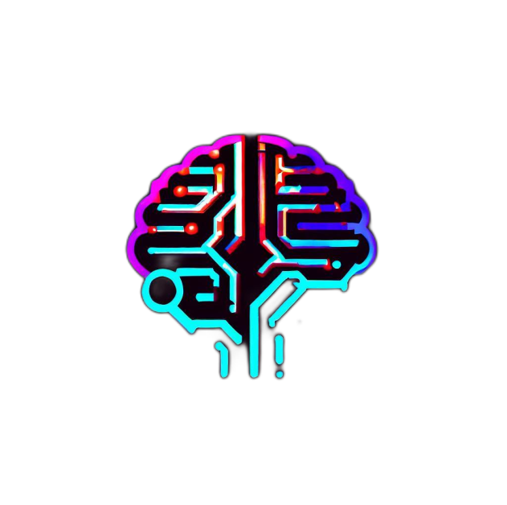

<header>
  <div class="main">

<div class="hidden lg:block">
  <div class="line">
    
  </div>

  <div class="icons">
    <button type="button" class="flex justify-center items-center">
      <a href="https://github.com/TheLostHeaven">
        
      </a>
    </button>

    <button type="button" class="flex justify-center items-center">
      <a href="https://www.linkedin.com/in/dani-molina-in/">
        
      </a>
    </button>

    <button type="button" class="flex justify-center items-center">
      <a href="#">
        
      </a>
    </button>
  </div>
</div>

<nav class="bg-white border-gray-200 dark:bg-gray-900 bg-customBackgroundColor">
  <div class="max-w-screen-xl flex flex-wrap items-center justify-between mx-auto p-4">
    <a href="/" class="flex items-center space-x-3 rtl:space-x-reverse">
        
        <span class="self-center text-2xl font-semibold whitespace-nowrap dark:text-white hidden lg:block">Daniel Molina</span>
    </a>
    <button (click)="toggleNavbar()" [ngClass]="{'change-icon': true, 'opened': !isNavbarHidden}" type="button" class="inline-flex items-center p-2 w-10 h-10 justify-center text-sm text-gray-500 rounded-lg md:hidden hover:bg-gray-100 focus:outline-none  dark:text-gray-400 dark:hover:bg-gray-700 bg-customBackgroundColor" aria-controls="navbar-default" aria-expanded="false">
        <span class="sr-only">Open main menu</span>
        <svg *ngIf="isNavbarHidden" class="w-5 h-5 icon transition-transform" aria-hidden="true" xmlns="http://www.w3.org/2000/svg" fill="none" viewBox="0 0 24 24">
          <!-- Icono de hamburguesa (tres líneas) cuando el menú está cerrado -->
          <path stroke="currentColor" stroke-linecap="round" stroke-linejoin="round" stroke-width="2" d="M4 6h16M4 12h16m-7 6h7"></path>
        </svg>
        <svg *ngIf="!isNavbarHidden" class="w-5 h-5 icon transition-transform" aria-hidden="true" xmlns="http://www.w3.org/2000/svg" fill="none" viewBox="0 0 24 24">
          <!-- Icono de 'X' cuando el menú está abierto -->
          <path stroke="currentColor" stroke-linecap="round" stroke-linejoin="round" stroke-width="2" d="M6 18L18 6M6 6l12 12"></path>
        </svg>
    </button>

    <div [ngClass]="{'hidden': isNavbarHidden}" class="hidden w-full md:block md:w-auto bg-customColor" id="navbar-default">
      <ul class="font-medium flex flex-col p-4 md:p-0 mt-4 rounded-lg bg-gray-50 md:flex-row md:space-x-8 rtl:space-x-reverse md:mt-0 md:border-0 md:bg-white dark:bg-gray-800 md:dark:bg-gray-900 bg-customColor dark:border-gray-700">
        <li>
          <a routerLink="/" routerLinkActive="active" href="/" [routerLinkActiveOptions]="{exact: true}" class="block py-2 px-3 text-gray-900 rounded hover:bg-gray-100 hover:text-bg-primary-color md:hover:bg-transparent md:border-0 md:hover:text-blue-700 md:p-0 dark:text-white md:dark:hover:text-customPrimaryColor dark:hover:bg-gray-700 dark:hover:text-white md:dark:hover:bg-transparent">#/Inicio</a>
        </li>
        <li>
          <a routerLink="/Projects" routerLinkActive="active" href="/Projects" class="block py-2 px-3 text-gray-900 rounded hover:bg-gray-100 hover:text-bg-primary-color md:hover:bg-transparent md:border-0 md:hover:text-blue-700 md:p-0 dark:text-white md:dark:hover:text-customPrimaryColor dark:hover:bg-gray-700 dark:hover:text-white md:dark:hover:bg-transparent">#/Proyectos</a>
        </li>
        <li>
          <a routerLink="/About" routerLinkActive="active" href="/About" class="block py-2 px-3 text-gray-900 rounded hover:bg-gray-100 md:hover:bg-transparent md:border-0 md:hover:text-blue-700 md:p-0 dark:text-white md:dark:hover:text-customPrimaryColor dark:hover:bg-gray-700 dark:hover:text-white md:dark:hover:bg-transparent">#/Sobre Mí</a>
        </li>
        <li>
          <a routerLink="/Contacts" routerLinkActive="active" href="/Contacts" class="block py-2 px-3 text-gray-900 rounded hover:bg-gray-100 md:hover:bg-transparent md:border-0 md:hover:text-blue-700 md:p-0 dark:text-white md:dark:hover:text-customPrimaryColor dark:hover:bg-gray-700 dark:hover:text-white md:dark:hover:bg-transparent">#/Contactame</a>
        </li>
      </ul>
    </div>
  </div>
</nav>
</div>
</header>

